Know Your Surgeon Before Hair Transplant
Additional Qualifications & Fellowships
Post Graduate Diploma
Clinical Cosmetology [PGDCC]
Surgical Fellowship
Fellowship in Hair Transplant Surgery
Facial Aesthetics Workshop
Master Course in Facial Aesthetics [MCFA]
Trichology Specialization
Master Course in Trichology [MCIT]
"Committed to providing evidence-based hair restoration solutions with emphasis on natural hairline design, patient safety, and long term aesthetic outcomes."
Clinical Excellence Framework
Natural Hairline Architecture
Custom hairline blueprints matching natural facial dimensions, graft angles, and aging progressions unique to each individual patient profile.
Maxillofacial Precision Advantage
Surgical depth regulation and precise follicular positioning ensure maximized survival index indicators for every harvested follicle.
Evidence-Based Patient Pathways
Seamless coordination from pre-op multi-angle scalp analysis to structural post-operative monitoring frameworks across all recovery phases.
Sterile Surgical Security
Strict clinical safety parameters designed to promote rapid, inflammation-free healing alongside permanent, natural-looking volume.
Case Study 1: Advanced Hair Transplantation (Patient Profile I)
Verified treatment timeline outlining customized hairline mapping (identity protected), immediate post-op graft density, and milestones at 1, 3, and 6 months.
Case Study 2: Advanced Hair Transplantation (Patient Profile II)
Re-arranged structural timeline showcase mapping the initial pre-op profile, top-down crown density blueprints, multi-angle post-procedure graphs, and incremental density gains at 1 week, 1 month, 3 months, and 6 months.
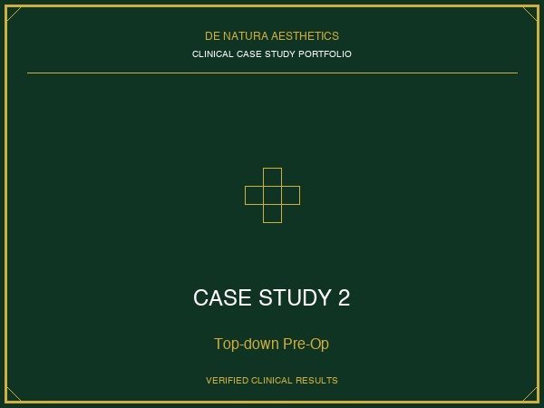
Top-down Pre op
Case Study 3: Advanced Hair Transplantation (Patient Profile III)
Multi-perspective clinical visualization detailing precision frontal and hairline recessional reconstruction progress, featuring comprehensive micro-graft integration and full density restoration.
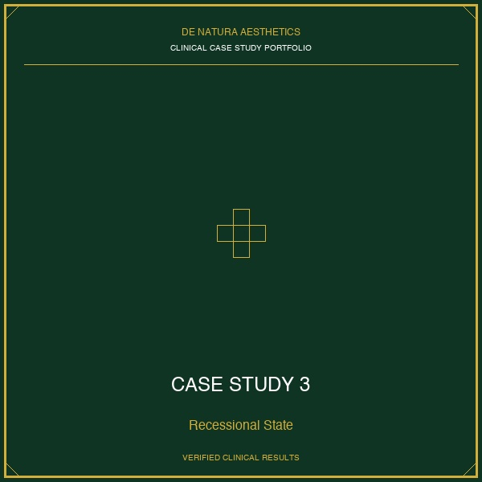
Before / Recessional State
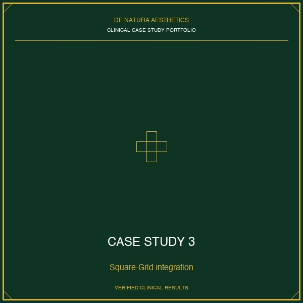
After Full Square-Grid Integration
Case Study 4: Advanced Hair Transplantation (Patient Profile IV)
Comprehensive 6-panel surgical mapping journey tracking initial thinning pre-op baseline, surgical drawing benchmarks, immediate post-op graft distribution matrix, followed by early 1-2 month growth transitions, culminating in high-volume curly density results. Optimized compact grid sizing.
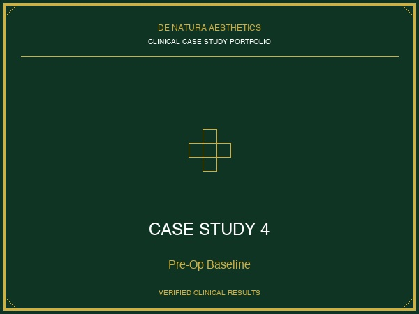
Pre-Op State
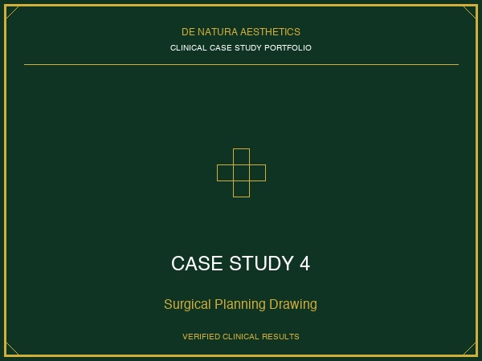
Surgical Planning
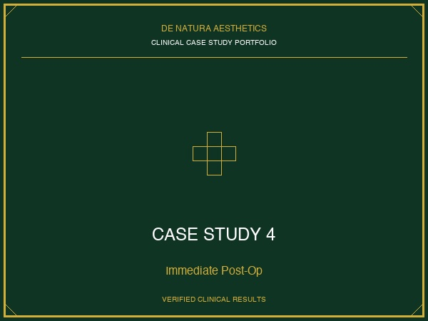
Immediate Post-Op
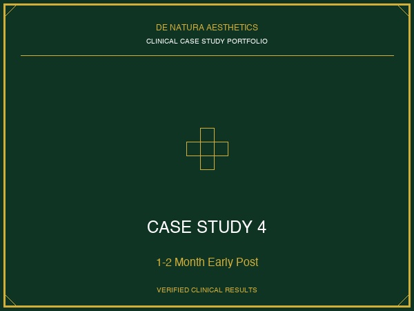
Early Post (1-2 M)
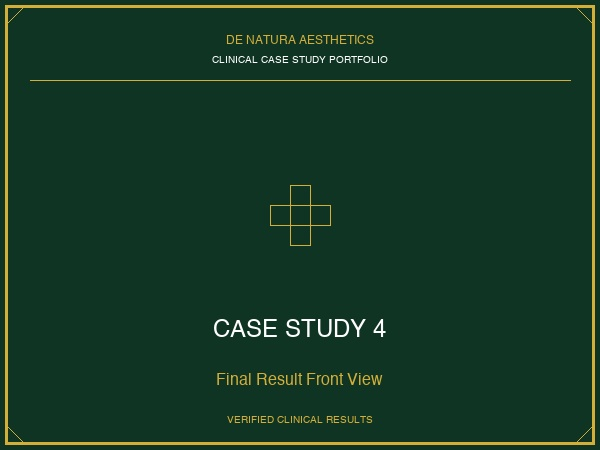
Final Result Front View
Case Study 5: Growth Factor Concentrate (GFC) Non-Surgical Therapy
Targeted restoration demonstrating significant reverse thinning, density optimization, and structural follicular thickness improvements.
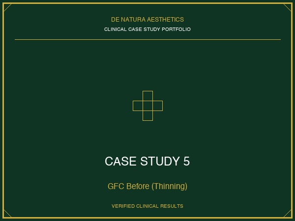
Before Treatment (Localized Thinning)
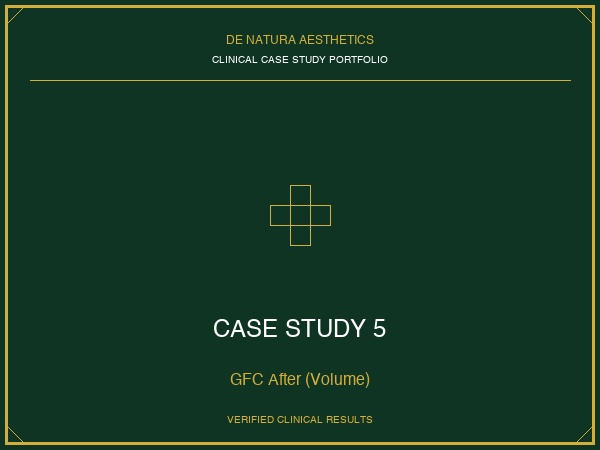
Advanced GFC Post-Treatment Volume
Case Study 6: Facial Hair Restoration (Beard & Mustache)
Meticulous micro-grafting milestones spanning pre-op guidelines, placement phases, clot removal healing, and complete structural integration over a 6-month period.
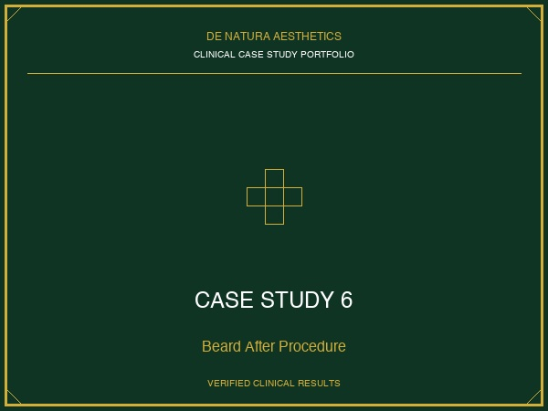
After procedure
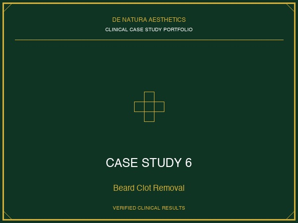
Clot removal